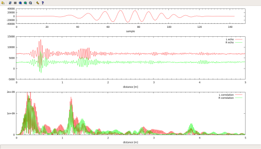

Jednoduchý sonar ze zvukovky
Jakub Kákona (kaklik@mlab.cz)
Program je demonstrací základních funkcí audio systému ALSA http://www.alsa-project.org/. Konkrétně je ukázkou přístupu k zařízení Playback a Capture. A zároveň jednoduchým prostředkem k prozkoumání akustických vlastností různých materiálů pouze pomocí svého počítače. :)
Závislosti
Program je napsán pro OS Linux a testován byl konkrétně na Ubuntu.
- Linux
- libasound2
K přeložení programu je tedy nutné mít nainstalované vývojové knihovny ALSA (libasound2-dev). Pokud máme splněné všechny závislosti, tak lze program přeložit pomocí gcc s následujícími parametry:
gcc sonar.c -o sonar -lasound
O co se jedná
K funkci program využije mono reproduktorový výstup. A vstup stereofonního mikrofonu. Nejdříve si vygeneruje vzorky pingu do pole, které předá ovladači zvukové karty. Následně připraví a otevře zařízení mikrofonu, aby po jeho otevření mohl spustit oba kanály zvuku současně. Tím dojde k zaznamenání vysílaného signálu i případných odražených ech do pole, které lze pak dále zpracovávat.
Výstup
Navzorkovaná a vypočtená data jsou ukládána do textových souborů v adresáři /tmp/ ze kterého je pak možné je vykreslovat pomocí skriptu Gnuplotu. V horní části grafu je vysílaný signál. Uprostřed signál navzorkovaný mikrofony a dole výstup po korelaci nasnímaného signálu s odeslaným.
~#gnuplot
> load "plot.gp"
Skrip si sám cyklicky spouští program "sonar" a překresluje graf. Lze tak experimentovat s odrazy od různých překážek a třeba i pokračovat ve vývoji kódu.
Zpracování dat
Zpracovaní používá pouze metodu křížové korelace kterou se porovnají snímané signály vůči původnímu odeslanému pingu. Tím jsou ve výsledku velice zvýrazněna odražená echa. Celý algoritmus jsou následující dva cykly:
for (n=0; n < (period_size - chirp_size - 1); n++)
{
l=0;
r=0;
for ( m = 0; m < chirp_size;m++)
{
l += chirp[m]*L_signal[m+n]; // correlate with left channel
r += chirp[m]*R_signal[m+n]; // correlate with right channel
}
correlationl[n]=abs(l);
correlationr[n]=abs(r);
}
Všechny zdrojové kódy v jednom balíku (64bit)
Známé chyby a nedodělky
- Ztráta amplitudy signálu
- Takto jednoduchý program neuvažuje ztrátu výkonu signálu při šíření prostředím. Správně by se mělo zvyšovat zesílení vstupu mikrofonů se čtvrtou mocninou času.
- Korektní start slinkovaného zařízení
- Knihovna ALSA by podle dokumentace měla umět spojit zařízení Capture a Playback do jednoho a zacházet tak pak pouze s jedním zařízením. Toto by bylo zvlášť užitečné pro zlepšení synchronizace vstupu a výstupu. Tato možnost mi ale nefungovala na všech počítačích, proto je v tomto konkrétním kódu zakomentována.